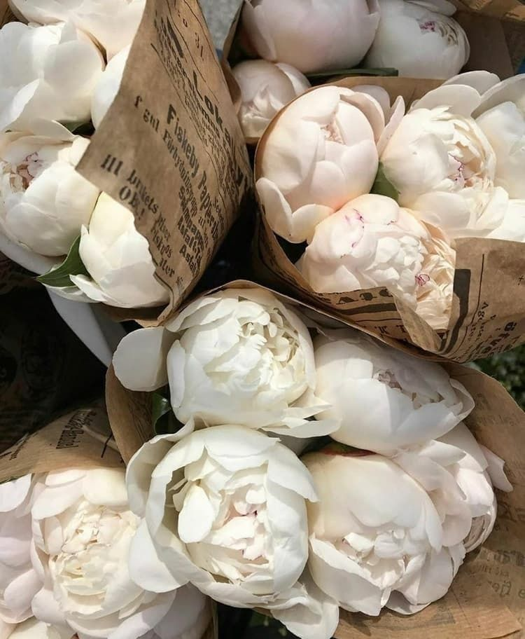

Троянди
Троя́нда(Rosa L.) — рід і культурна форма рослин родини трояндових, листопадні, рідко вічнозелені кущі до 4 метрів заввишки. Дикі рослини насамперед у помірному кліматі. Відомо близько 300—400 видів дикої троянди. Рослини зазвичай мають форму куща або ліани. У класичному зображенні троянда має 32 пелюстки, звідси назва роза (троянда) вітрів. Відомо близько 6 000 сортів, що їх отримано шляхом гібридизації й відбору (за іншими даними, тепер налічують понад 14 тисяч сортів троянд). У Японії виведена троянда «хамелеон», яка змінює своє забарвлення від освітлення. Виведені сорти троянд зберігають і розмножують протягом багатьох років за допомогою щеплення бруньок і живців на шипшині.
Гвоздики
Гвоздики, гвозди́ка(Dianthus) — рід багаторічних рослин із родини гвоздикових. Багаторічні трави і напівкущі з лінійним або лінійно-ланцетоподібним листям. Квітки поодинокі або по 2—3 на кінцях гілочок. Чашечка циліндрична або циліндрично-конічна, з численними поздовжніми жилками і 2—4 парами лускоподібних чашолистків, що каскадом налягають один на одного. Пелюсток п'ять, з довгими нігтиками і зубчастим, торочкувато розсіченим відгином, зрідка цілісним. Тичинок десять. Стовпчиків два. Плід — циліндрична коробочка, сидяча або на короткому карпофорі, одногніздна, що розкривається чотирма зубцями. Насіння численне, сплющене, овальне, чорного кольору.
Хризантеми
Хризантема (Chrysanthemum) — рід квіткових рослин з родини айстрових. Складається з майже 40 видів, що зростають у Євразії й на півночі Північної Америки. Також є багато декоративних сортів хризантем. Хризантеми зараз переважно вирощують як декоративну рослину, але є окремі види, які використовують як лікарську рослину. Культура декоративних садових хризантем налічує більше тисячі років. У Китаї, звідки родом більша частина хризантем, садові форми почали виводити ще 551 р. до н. е. Потім хризантеми були завезені до Японії, де стали національним символом. До Європи хризантеми завезли у XVII ст. Деякі види хризантем з успіхом можна вирощувати під відкритим небом, інші — тільки в оранжереях, але всі вони цінуються квітникарями за яскравість фарб, тривале цвітіння, легкість розмноження. китайській народній медицині хризантему використовують як лікувальну рослину: її листки призначають при головних болях, а висушені квіти — для покращення апетиту. В багатьох країнах листки і квіти використовували для лікування очних захворювань, малярії, алкоголізму, шлункових захворюваннях, профілактики серцево-судинних захворювань.
Півонії
Півонії — це багаторічні трави (більшість видів), а також кущі або півкущі (бл. 10 видів). Більшість трав'янистих півоній зазвичай 0,5–1,5 м заввишки, деякі кущові і деревні сягають 1,5–3 м заввишки. Мають шишковидно потовщене коріння. Листки — чергові, великі, двічі-, тричі- перисторозсічені. Під квітками листки зазвичай дрібніші й більш скупчені, поступово переходять у чашолистики. Квітки півоній — великі, двостатеві, одиночні; білого, жовтого, жовтогарячого, рожевого і червоного кольорів з відтінками. Складаються з 5—8 і більше пелюсток, велика кількість тичинок. Від 2 до 5 язиковидних маточок. Плід — багатолистянка, що містить декілька великих лискучих насінин.
Альстромерії
Південноамериканська кореневищна бульбова трав'яниста рослина альстромерія (Alstroemeria), ще іменоване альстремерія, або алстромерия, є представником сімейства Альстремеривые. Це красивоцветущее рослину ще називають «лілією інків», або «перуанської лілією». Дане сімейство і рід було названо на честь учня Карла Ліннея ― барона Класу Альстрема: він був шведським меценатом, промисловцем і ботаніком, який жив у 18, саме він привіз насіння двох видів альстромерії своєму вчителеві Ліннею. Дуже часто в літературі таку рослину називають «альстромерій». У природі воно зустрічається на території всієї Південної Америки. Цей рід об'єднує приблизно 50-100 видів. Більшість з них широко культивуються в якості декоративно-квітучих садових рослин, які можуть також використовуватися і для зрізання.
Гіпсофіла
Гіпсофілу повзучу (Gypsophila repens) ще називають альпійською гіпсофілою. Приблизно 20 см висотою в ширину вона розростається до 30-50 см. Це ефектний грунтопокривний багаторічний вид, який до того ж дуже невибагливий. Найбільш відомий серед однорічних гіпсофіл – гіпсофіла морова, або лищиця польова (Gypsophila muralis). «Гіпсі» — популярний сорт цього виду часто використовується для контейнерного озеленення, а на Заході його дуже полюбляють флористи для створення весільних букетів. Ця гіпсофіла має розгалужені стебла висотою до 15 см, які рясно цвітуть дрібненькими білими квітами все літо. Але найбільше в пошані у флористів багаторічна гіпсофіла волотиста (Gypsophila paniculata), яка в дорослому віці може вирости до 1,2 м в ширину і висоту та утворити величезний пухнастий шар з білих дрібних квіточок. При цьому її стрижневий корінь заглиблюється в землю на кілька метрів. Про що це говорить? Правильно – доросла гіпсофіла не принесе клопотів у вигляді регулярного поливу. Вона забезпечить себе вологою сама навіть у дуже посушливі періоди. Всі види та сорти і багаторічної, і однорічної гіпсофіли мають скромне дрібне і рідке листя, яке розташоване переважно біля основи рослини. В деяких сортів листки мають фіолетове чи пурпурове забарвлення. Та і квіти гіпсофіли насправді не дуже ефектні самі по собі – дрібні, біленькі, а в деяких сортів рожеві або світло-фіолетові, простої чи махрової форми, вони справляють враження тільки тому, що їх багато. Дуже багато! Це як лаванда – одне суцвіття дуже скромне на вигляд, але букет чи лавандове поле – це вже щось надзвичайне! Квіточки гіпсофіли мають приємний аромат, тому їх полюбляють комахи.
Лютик
Жовте́ць повзу́чий (Ranunculus repens) — квіткова рослина з роду Жовтець (Ranunculus) родини жовтцевих (Ranunculaceae), поширена у Європі, Азії та Північній Африці. Жовтець повзучий має висхідне розгалужене стебло 15—75 см заввишки з довгими лежачими пагонами, що вкорінюються у вузлах. Листки трійчасті, черешкові. Квітки з п'ятичленною оцвітиною, з багатьма тичинками і маточками. Багаторічна рослина. Цвіте у травні — серпні, запилюється комахами. Плоди — дрібні сім'янки, зібрані в кулясті невеличкі головки. Рослина добре розмножується вегетативно за допомогою повзучих прикореневих пагонів. У свіжому стані отруйна для худоби.
Ромашки
Родина складноцвіті (айстрові). Однорічна рослина 15-60 см заввишки, з розгалуженим, борозенчастим стеблом. Листки чергові, 2-3-перисто-розсічені, сидячі. Квітки дрібні, зібрані у верхівкові суцвіття — кошики. Крайові квітки кошиків язичкові, білі, серединні — трубчасті, жовті, містяться на довгому, конічному, всередині порожнистому квітколожі. Цвіте в червні — серпні. Плід — довгаста сім'янка без чубка волосків. Рослина з сильним ароматним запахом. Росте невеликими заростями або групами на подвір'ях, біля доріг, на вулицях, у садах майже по всій території України, проте на Поліссі — рідше. Культивується. Важлива лікарська рослина. Збирають суцвіття (кошики). Використовуються як потогінний, дезінфікуючий, в'яжучий, заспокійливий та протизапальний засіб. Кошики також використовують у парфумерній промисловості.
Лаванда
Лаванда — це трави, напівкущі або кущі діаметром від 40 до 90 см, висотою від 50 до 120 см. Характеризується насиченим цвітінням блакитного, фіолетового, рожевого або білого кольору: звісно все залежить від сорту та види лаванди. Видів лаванди три, а сортів у світі понад тридцять. Може вирощуватися на чорноземах, піщаних, малопродуктивних та кам'янистих грунтах. Листки супротивні, лінійні або лінійно-ланцетні, з загорнутими краями, опушені. Квітки — двостатеві, блакитно-фіолетові або сині (гібридні — інших кольорів), зібрані на кінцях пагонів у колосоподібні суцвіття. Плід — еліпсоподібний темно-бурий горішок.
Нарцис
До роду належать до 20 видів, поширених в Європі, переважно в середземноморських країнах, особливо західних; один вид росте в Азії в Японії і Китаї. Кілька витончених видів нарцисів здавна використовують як весняні прикраси садів і кімнат. З них особливо поширені такі: 1) Нарцис тацет (Narcissus tazetta) — дикоростучий у Південній Європі, відрізняється тим, що квіти його зібрані на верхівці безлистої стрілки, довжиною від 30 до 40 см, парасолькою з 8 до 10. Ці квіти жовтувато-білі, з маленькою блюдцеподібною коронкою такого ж кольору і дуже ароматні. Не зимують в помірному кліматі у відкритому ґрунті, можливе вирощування в оранжереях або вдома. Цибулину слід садити в жовтні або на початку листопада. Є декілька різновидів, у тому числі махрові. 2) Нарцис несправжній (Narcissus pseudonarcissus) — відрізняється великою коронкою, квіти одиночні, ароматні, жовті або ж оцвітина біла, а коронка жовта. Витривалий і може розводитися на відкритому ґрунті в умовах помірного клімату. 3) Нарцис жонкіль (Narcissus jonquilla) — квіти зібрані по 2-3 на верхівках стрілок, золотисто-жовті, коронка блюдцеподібна, маленька. 4) Нарцис білий (Narcissus poeticus) — квіти поодинокі, рідко парні, ароматні, чисто білі, коронка їх у вигляді блюдця, жовтувата з червоним краєм або без нього. Прекрасно росте у відкритому ґрунті. Цибулини висаджують восени, починаючи з вересня і до початку листопада; посаджені в інший час не виростають. Нарцис не вимогливий до якості ґрунту. Розмножують відділенням молодих цибулин (діток) зі старої цибулини щорічно; можливо робити це також і через більші проміжки часу, наприклад кожні 4 роки. Насінням розводити нарцис незручно, тому що вони дуже важко проростають — іноді через 2-3 роки, а потім ще до цвітіння доводиться чекати поки рослина не зміцніє, на що потрібно від 5 до 12 років, в залежності від виду. 5) Narcissus bulbocodium (Криноліновий нарцис) — мініатюрний нарцис висотою 10–15 см. Крім названих, у садівництві чимало інших вельми витончених, але менш поширених видів нарцисів.